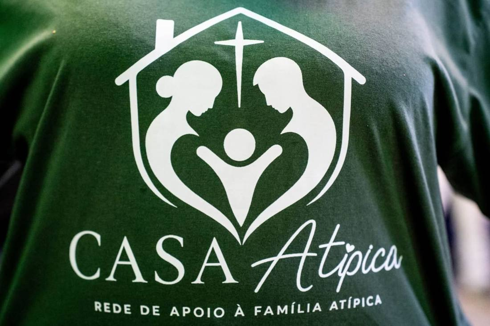

Triagem de acolhimento aberta
Rede de apoio à família atípica
Casa Atípica
Quem cuida também precisa ser cuidada.
- 20perguntas simples
- 8 minpara responder
- 100%sigiloso
- R$ 0acolhimento gratuito
O projeto
O que é a Casa Atípica?
A Casa Atípica é uma rede de apoio à família atípica. O nosso cuidado começa pelas mães atípicas: mães de filhos com transtorno do espectro autista (TEA), com laudo ou ainda em investigação.
Sabemos que a rotina de terapias, crises, escola e preconceito cansa. Muitas mães param de trabalhar, se afastam dos amigos e esquecem de si mesmas. Aqui você aprende a lidar com o autismo do seu filho e também recebe cuidado para você.
-
Aprender
Entender o autismo, lidar com crises e rotina, e conhecer os direitos do seu filho.
-
Cuidar
Escuta e apoio para a sua saúde emocional e mental, sem julgamento.
-
Fortalecer
Fé, uma rede de outras mães e caminhos para você não caminhar sozinha.
Casa Atípica · Momentos
Aqui ninguém
caminha sozinha.
Toque em uma foto para ampliar.
Como funciona
Do primeiro contato ao acolhimento
As vagas são organizadas por prioridade: quem mais precisa é chamada primeiro. Por isso começamos pela triagem.
Triagem
Você responde 20 perguntas simples pelo celular, em uns 8 minutos.
Análise
A equipe lê suas respostas com cuidado e define a prioridade do acolhimento.
Contato
Falamos com você pelo WhatsApp, por ordem de prioridade.
Acolhimento
Encontros para aprender, ser cuidada e fazer parte de uma rede de mães.
Precisa de ajuda agora? Se você está em sofrimento muito forte ou pensando em se machucar, não espere a triagem: ligue 188 (CVV, 24 horas, de graça) ou 192 (SAMU).

O nosso símbolo
Uma casa
para a família inteira.
- A casa: um lugar seguro para chegar como você é.
- A cruz: a fé que sustenta cada passo.
- Mãe e pai: juntos, formando um coração em volta do filho.
- O filho no centro: de braços abertos, cuidado e celebrado.
Mãe atípica não precisa ser forte o tempo todo. Precisa de um lugar para ser acolhida.
Triagem de acolhimento
Chegou a sua vez.
Responda a triagem com calma e sinceridade. Não existe resposta certa ou errada: ela só serve para a equipe entender como pode te ajudar.
Gratuita e sigilosa
Conte como você está
Aponte a câmera do celular para o QR code ou toque no botão. Leva uns 8 minutos.
Fazer triagemSeus dados ficam em sigilo. As respostas são guardadas com segurança e só a equipe de acolhimento tem acesso. Elas não são compartilhadas com ninguém e servem apenas para o seu acolhimento (Lei Geral de Proteção de Dados).
Atendimento
Fale com a equipe Casa Atípica
Dúvidas sobre a triagem ou o acolhimento? A equipe responde pelo WhatsApp.